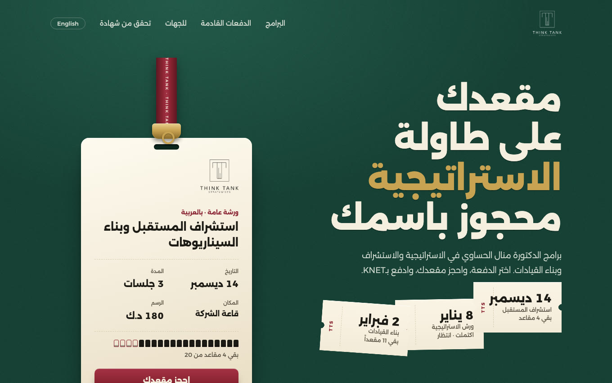
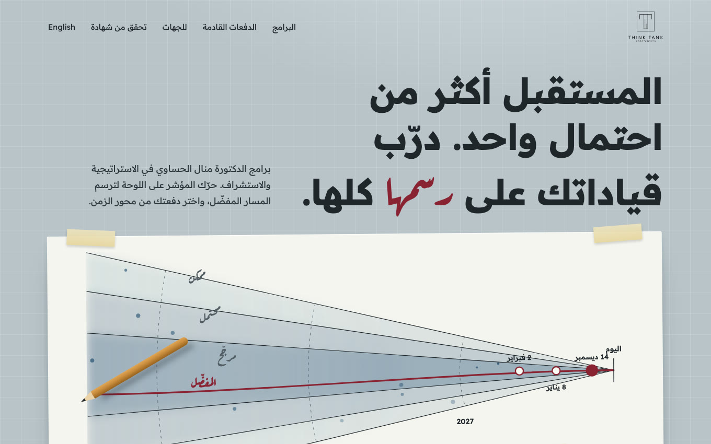
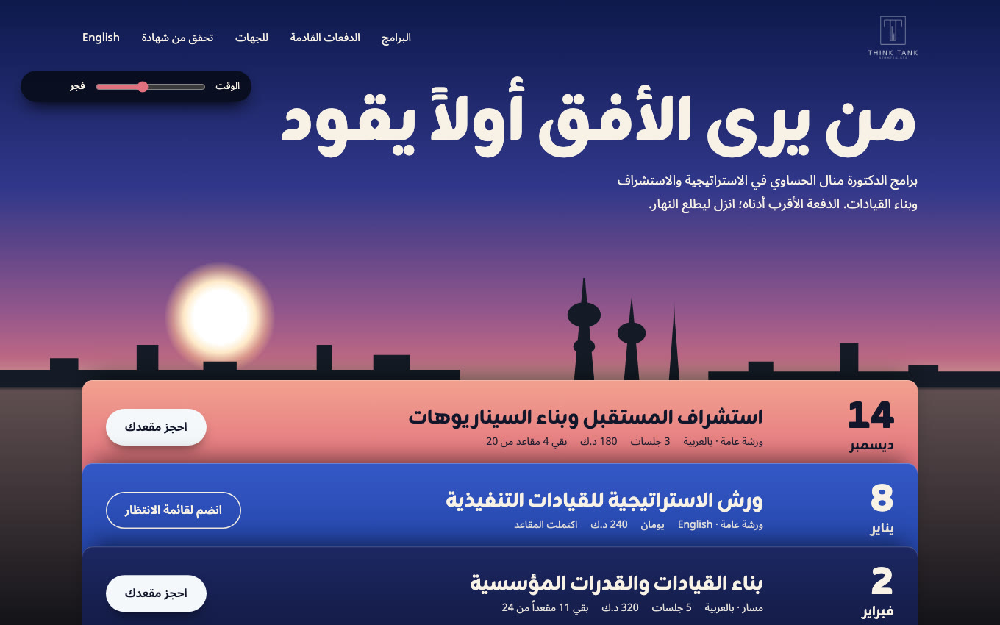
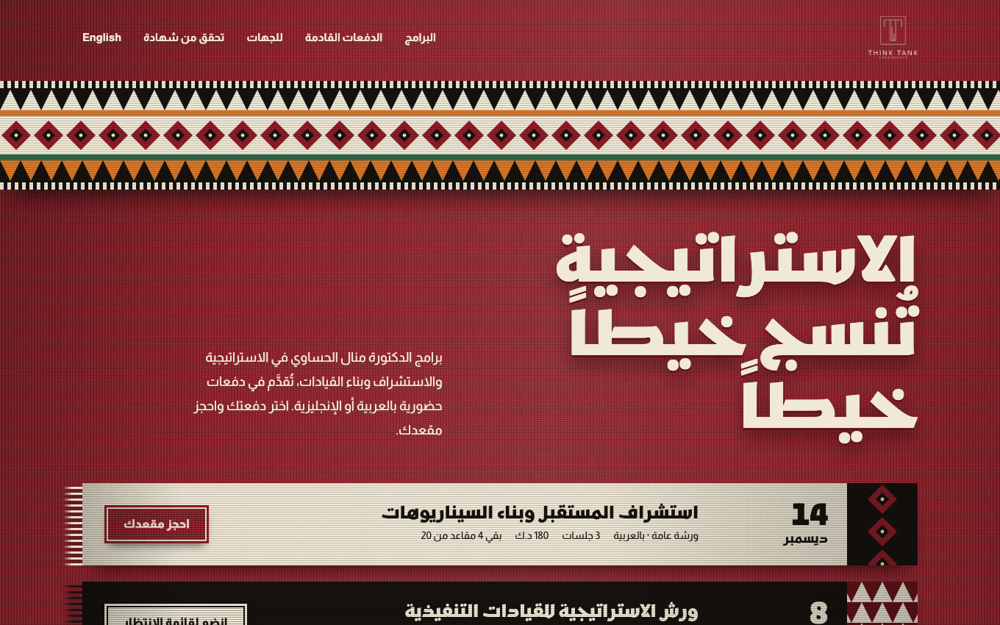

أربعة اتجاهات للهوية البصرية
كل اتجاه صفحة حيّة: افتحها، حرّك المؤشر، واضغط الأزرار. اختر واحداً نبني عليه الشاشات، أو قل ما تأخذه من كل واحد.

البطاقة
كل شي في النظام غرض على طاولة الاجتماعات: بطاقة حضور على شريط، تذاكر، لوح حضور، وختم نحاسي.
- الحركة
- البطاقة تتأرجح وتميل وتنقلب، والختم يُكبس عند الحجز
- الإحساس
- مجلس إدارة، فاخر وملموس
- الخطر
- يصير لعبة لو زاد التشبيه بالأغراض
افتح «البطاقة»

المخروط
لغة الاستشراف نفسها: مخروط المستقبلات مرسوم بالرصاص على ورق شفاف، والقلم يتبع مؤشرك ويرسم «المفضّل».
- الحركة
- المخروط ينفرد، السيناريوهات تسير، والقلم يرسم
- الإحساس
- ورشة عمل، هادئ وذكي
- الخطر
- أهدأ الأربعة؛ قوته كلها في الرسم
افتح «المخروط»

الأفق
الضوء هو الهوية: الصفحة تبدأ ليلاً وتنتهي نهاراً، والشمس تطلع على أبراج الكويت كلما نزلت.
- الحركة
- سماء تتغير مع التمرير، شمس تطلع، وظلال تقصر
- الإحساس
- طموح وسينمائي
- الخطر
- أبعدها عن ألوان موقعها الحالي
افتح «الأفق»

السدو
نسيج كويتي بلون شعارها: أرضية حمراء منسوجة، أشرطة ونقوش، وشريط يُنسج أمامك صفاً صفاً.
- الحركة
- المكّوك ينسج الشريط، والنقشة تجري في الأشرطة
- الإحساس
- كويتي، جريء، لا يشبه أحداً
- الخطر
- قد يُقرأ تراثياً أكثر من استشاري
افتح «السدو»
لماذا تُرك الاقتراح الأول
- مسطّح: خطوط رفيعة بلا عمق ولا ظل.
- بلا أي حركة.
- خلفية كريمية وخطوط رفيعة وعناوين صغيرة متباعدة: من أكثر الأشكال التي تنتجها أدوات الذكاء الاصطناعي.
- خطوطه من القائمة التي يختارها أي مولّد تلقائياً.
ما يجمع الأربعة
- شعار الدكتورة كما هو، بلا تعديل.
- عربي أولاً، وأرقام 123.
- كل اتجاه يعرض الموقع العام، وشاشة من البوابات، والشهادة.
- الحركة تتوقف لمن يطلب تقليل الحركة في جهازه.
- التواريخ والرسوم والأسماء تجريبية.